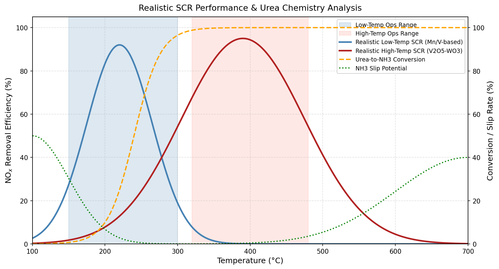

선택적 촉매 환원장치
1. SCR (Selective Catalytic Reduction)
SCR은 배기가스에 포함된 질소산화물(NOx – NO, NO2)을 환원제(NH3 또는 요소수)와 탈질 촉매를 이용하여 반응시킴으로써 인체에 무해한 질소(N2)와 물(H2O)로 환원시켜 배출하는 장치입니다.
1.1 환원제
1) 환원제의 종류
- 요소수($CO(NH_{2})_{2}$
| 농도 |
규격 |
용도 |
특징 |
| 32.5% Urea |
ISO 22241 |
자동차 SCR (표준) |
동결점: -11°C |
| 40% Urea |
비표준 |
산업용 SCR |
더 높은 농도 |
| 50% Urea |
비표준 |
극저온 환경 |
거의 사용 안함 |
- 암모니아 ($NH_{3} $)
| 농도 |
화관법 적용 |
설명 |
| ≤10% NH3 |
❌ 비적용 |
위험물 분류 제외 (일반적으로 9% 암모니아 사용) |
| >10% NH3 |
✅ 적용 |
위험물 관리 필수 |
| ≥25% NH3 |
✅✅ |
특별관리물질 |
2) 탱크 저장 일수
| 저장 일수 |
선정 기준 |
| 3~5일 |
공급 안정적인 지역 (도시) |
| 7~10일 |
공급 불안정 지역 (산업) |
| 10~14일 |
산악/원격지역 |
| 보통 산업시설 |
5~7일 권장 |
1.2 촉매의 종류
| 구분 |
저온 촉매 (Low-Temp SCR) |
고온 촉매 (High-Temp SCR) |
| 최적 운전 온도 |
180~300℃ (주로 220℃ 부근) |
320~480℃ (주로 380℃ 부근) |
| 최대 NOx 제거 효율 |
약 80 ~ 92% |
약 90 ~ 95% 이상 |
| 주요 촉매 재질 |
망간(Mn) 계열, 저온용 바나듐-안티몬(V-Sb/TiO2). 활성탄 섬유 |
바나듐-텅스텐(V2O5 - WO3/TIO2), 제올라이트(Cu/Fe-Zeolite) |
| NH3 Slip 특성 |
180℃미만에서 미반응 배출 위험 높음 |
500℃이상에서 NH3 산화로 인한 slip 증가 |
| 요소수 분해 효율 |
저온 구간(180℃이하) 분해 불충분, 결정(Deposit) 생성 위험 |
300℃이상에서 100%에 가까운 완전 분해 |
| 주요 적용 분야 |
소각로 후단, 선박(저부하 운전), 저온 배기 공정 |
화력발전소, 대형 선박 엔진, 산업용 보일러 |
| 장단점 |
장점: 배기가스 재가열 비용 절감
단점: 수분 및 황산화물(SOx)에 의한 피독에 취약
|
장점: 기술적 신뢰도 높음, 내구성 우수
단점: 낮은 온도에서는 활성 급격히 저하
|
1.3 SCR 촉매 온도별 NOx 제거효율 및 요소수 분해특성
아래자료는 촉매의 종류 및 특성에 따른 SCR의 성능 및 요소수 분해 특성을 나타낸 자료입니다. 실제와는 다를 수 있으며, 참고용으로만 활용하시기 바랍니다.

그림. SCR 촉매 온도별 NOx 제거효율 및 요소수 분해특성 (Low-Temp: Mn/V계, High-Temp: V₂O₅-WO₃계)
1.4 촉매의 설계
1) 촉매의 공간속도(Space Velocity, SV) 설계 범위
- 고온 SCR : 4,000 ~ 6,000 h⁻¹
- 저온 SCR : 50,000 ~ 100,000 h⁻¹
2) 촉매 부피 계산
SV (h⁻¹) = 배기가스 유량(m³/h) / 촉매 부피(m³)
∴ 필요 촉매 부피(m³) = 배기가스 유량 / 목표 SV값
2. 요소수($CO(NH_{2})_{2}$
2.1 반응생성식
반응생성식은 다음의 3가지 반응식으로 일어나며, 이중 95%이상 반응이 일어나는 2)번 환원식을 사용합니다.
2.2 요소수 투입량 계산
1) 설계입력자료
주1) O2 농도기준 1) 보일러 : 4% 2) 폐기물 : 12% 3) 발전소 : 15%
주2) 인입가스유량은 농도계산시 건조가스 기준이므로 수분을 제거한 건조상태의 유량을 입력
2) 계산결과
| 구 분 |
입력 자료 |
비고
|
| NOx 제거율 (%) |
|
|
| 요소수 사용량(kg/h) |
|
|
| 요소수 사용량(lit/h) |
|
|
| Water spray량 |
|
|
주1) Water spray 량 : 투입되는 환원수의 전체 물의 량 (환원수에 추가로 투입되는 물의량)
3. 암모니아($NH_{3})$
3.1 반응생성식
1) $\quad 2NO + 2NH_{3} + \frac{1}{2}O_{2} \quad\quad\quad\quad \Rightarrow \quad\quad 2N_{2} + 3H_{2}O $
3.2 암모니아아 투입량 계산
1) 설계입력자료
주1) O2 농도기준 1) 보일러 : 4% 2) 폐기물 : 12% 3) 발전소 : 15%
주2) 인입가스유량은 농도계산시 건조가스 기준이므로 수분을 제거한 건조상태의 유량을 입력
2) 계산결과
| 구 분 |
입력 자료 |
비고
|
| NOx 제거율 (%) |
|
|
| 암모니아 사용량(kg/h) |
|
|
| 암모니아 사용량(lit/h) |
|
|
| Water spray량 |
|
|
주1) Water spray 량 : 투입되는 환원수의 전체 물의 량 (환원수에 추가로 투입되는 물의량)